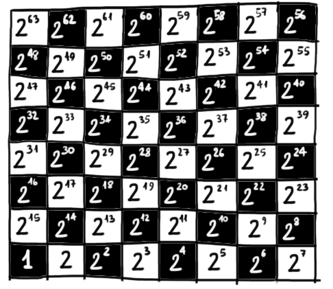

Dante conosceva la matematica?
Sicuramente possiamo affermare che era a conoscenza di molti matematici: nella Divina Commedia ne incontriamo ben 24, distribuiti
tra Inferno e Paradiso. Non tutti erano matematici nel senso in cui intendiamo oggi. Infatti in passato la figura di matematico si
intecciava spesso con quella di filosofo, teologo, astronomo o addirittura astologo ed alchimista: chi era dedito
alla conoscenza la abbracciava nella sua interezza.
Nel Limbo (canto IV, versi 134 - 144), tra i tanti studiosi vissuti prima di Cristo che vengono riconosciuti, Dante cita esplicitamente due
matematici a noi ben noti: "Tale" (diminutivo latino di Talete) ed "Euclide geomètra".
In questo video Vittorio Gassman legge i versi sopra citati. Su Youtube trovate numerosi canti da lui interpretati,
tutti resi con un'intensità sorprendente.
Nella formazione di Dante è sicuramente presente la matematica, intesa come geometria euclidea e come aritmetica.
Infatti, dopo la morte di Beatrice (1290), il Poeta trovo conforto nello studio della filosofia; frequentò
la "scuola dei religiosi" e le "disputazioni dei filosofanti", venendo così a contatto con le opere di
Boezio. Questi aveva tradotto gli Elementi di Euclide, testo che per lunghi secoli è stato il riferimento per
eccellenza dei matematici europei. É quindi estremamente probabile che Dante abbia avuto modo di approfondire
la geometria, come suggerisce anche la presenza di alcuni teoremi tratti dagli Elementi all'interno delle cantiche
del Paradiso.
Nei paragrafi che seguono vengono illustrati tre esempi particolarmente significativi.
Prima citazione
Paradiso Canto XXVIII versi 91-93
L'incendio suo seguiva ogne scintilla;
Ogni angelo (scintilla) continuava a girare (seguiva) insieme al suo cerchio infuocato (L’incendio suo);
ed eran tante, che 'l numero loro
e il loro numero era così alto (eran tante)
più che 'l doppiar de li scacchi s'inmilla
che si moltiplicava (s’inmilla) più che la progressiva duplicazione (più che ’l doppiar) degli scacchi.
In questi versi Dante cerca di individuare un'immagine in grado di far percepire al lettore il numero sconfinato
di angeli al cospetto dei quali si trova.
La suggestione più efficace arriva dalla matematica delle esponenziali,
espressa attraverso una storia nota ai tempi del poeta.
Una leggenda di origine indiana narra che Sissa Nassir inventò il gioco degli scacchi per farne dono al
principe di Persia. Questi, in gesto di riconoscenza, promise al suo servitore di ricompensarlo
esaudendo qualsiasi desiderio avesse espresso. Sissa Nassir chiese al sovrano di ricevere tanto riso quanto
se ne ottiene riempendo ogni casella degli scacchi con il doppio dei chicci contenuti nella casella precedente,
iniziando con il riempire con un chicco la prima casella.
Facciamo un conto:

Quindi il numero totale di riso richiesto da Sissa Nassir è
\[
Q := 1 + 2 + 2^2 + 2^3 + \,\,\cdots\,\, + 2^{63}
\]
Per trovare qual è il valore della somma senza dovrela effettuare addendo per addendo, giochiamo di astuzia.
Partiamo dalla seguente uguaglianza (alla quale in seguito ci riferiremo attraverso il simbolo
\(\color{rgb(255, 0, 255)}{}(*)\))
\[
(x - 1)(1 + x + x^2 + x^3 + \,\,\cdots\,\, + x^{63}) \,=\, x^{64} - 1
\]
Infatti
\[
\begin{align*}
&(\color{blue}{}x \color{red}{} - 1\color{black}{})(1 + x + x^2 + x^3 + \,\,\cdots\,\, + x^{63}) =
\\\\
= & \,\,\,\color{blue}{}x + x^2 + x^3 + x^4 + \,\,\cdots\,\, + x^{64} \color{black}{}+
\\
& \color{red}{}-1 - x - x^2 - x^3 - \,\,\cdots\,\, - x^{63} \color{black}{}=
\\\\
= & \,\,\,x^{64} - 1
\end{align*}
\]
Sostituendo \(2\) al posto della \(x\) nell'uguaglianza \(\color{rgb(255, 0, 255)}{}(*)\) otteniamo che
\[
\begin{align*}
&(2 - 1)(1 + 2 + 2^2 + 2^3 + \,\,\cdots\,\, + 2^{63}) \,\,=\,\, 2^{64} - 1
\\\\
&\underset{Q}{\color{gray}{\underbrace{\color{black}{}1 + 2 + 2^2 + 2^3 + \,\,\cdots\,\, + 2^{63}}}} \,\,=\,\, 2^{64} - 1
\\\\
&Q \,\,=\,\, 2^{64} - 1 = 18\,446\,744\,073\,709\,551\,615
\end{align*}
\]
Il numero di chicchi di riso richiesto da Sissa Nassir era talmente elevato che il suo desiderio
non poteva essere esaudito neanche dando fondo al raccolto di un intero anno.
Esistono due vulgate della leggenda: nella prima, compiaciuto della scaltrezza del suo servitore,
il re lo nominò governatore di una delle province del regno; diametralmente opposta la seconda, nella
quale si narra che, indispettito dall'insolenza di Sissa Nassir, il re lo pone a processo perché sia giustiziato.
Nel citare questa storia, Dante la esaspera, scrivendo
più che 'l doppiar de li scacchi s'inmilla
intendendo che il numero delle schiere angeliche ad ogni istante si immillava (moltiplicava
per mille), più che il raddoppiarsi dei chicchi di grano sulla scacchiera.
Gustave Doré, geniale illustratore dell' '800,
rappresentò la visione di Dante in una delle opere che lo resero più celebre, riportata di seguito.
Seconda citazione
Nel X canto san Tommaso d'Aquino indica a Dante il re Salomone, descrivendolo come per sapienza secondo a nessuno.
entro v'è l'alta mente u' sì profondo
saver fu messo, che, se 'l vero è vero,
a veder tanto non surse il secondo.
Questa affermazione fa sorgere in Dante una domanda: come è possibile attribuire la pienezza della
sapienza a re Salomone? Solo Adamo e Cristo ne sono custodi, il primo in quanto creato direttamente da Dio, il secondo in quanto vero uomo e vero Dio.
San Tommaso scioglie questo dubbio solamente nel XIII canto, chiarendo che la sapienza di Salomone
è legata unicamente al suo uffico di re. Per chiarire quali siano i limiti del saggio sovrano, il santo prende ad esempio
il campo della teologia e quello della geometria, come possiamo leggere negli ultimi cinque versi di quelli sotto riportati.
Paradiso Canto XIII versi 96-102
Non ho parlato sì, che tu non posse
Non ho parlato in modo che tu non possa
ben veder ch'el fu re, che chiese senno
capire che egli fu re, e che chiese la sapienza
acciò che re sufficiente fosse;
per svolgere in modo adeguato il suo ufficio di sovrano;
non per sapere il numero in che enno
(chiese la sapienza) non per sapere
li motor di qua sù, o se necesse
il numero degli angeli, o se una premessa necessaria
con contingente mai necesse fenno;
e una contingente hanno mai prodotto una conseguenza necessaria
non si est dare primum motum esse,
non per sapere se è ammissibile un primo moto non generato da altro moto,
o se del mezzo cerchio far si puote
o se in un semicerchio si può
triangol sì ch'un retto non avesse.
inscrivere un triangolo non rettangolo.
Il teorema a cui Dante si riferisce è un corollario della Proposizione 20 del libro III degli Elementi di Euclide.
Entrambe sono riportate di seguito, assieme alla loro dimostrazione.
Proposizione 20 - Libro III
Un angolo al centro è il doppio di un angolo alla circonferenza che insiste sullo stesso arco.
Figura interattiva
Trascinate i punti rossi \(B\) e \(P\). Comunque li posizioniate sulla circonferenza, gli angoli
al centro ed alla circonferenza che insistono sull'arco \(AB\) sono l'uno il doppio dell'altro.
Dimostrazione
Corollario
Se un triangolo è inscrivibile in una semicirconferenza,
allora è rettangolo.
Figura interattiva
Trascinate il punto rosso \(P\). Comunque il punto prenda posizione sulla semicirconferenza, il
triangolo ottenuto ha un angolo di \(90°\) con vertice nel punto blu, ovvero è rettangolo.
Dimostrazione
Terza citazione
L'ultimo risultato matematico che riporto viene citato nel Canto XVII del Paradiso. Dante si trova in presenza di
Cacciaguida, suo avo, al quale chiede di svelare quale sia il destino che lo aspetta, più volte profetizzato in
modo misterioso durante i suoi incontri con anime dell'Inferno e Purgatorio.
Nel formulare questa richiesta, Dante apre con una similitudine che sfrutta un teorema di geometria euclidea.
Paradiso Canto XVII versi 13-18
O cara piota mia che sì t'insusi,
O caro mio capostipite, che ti innalzi
che, come veggion le terrene menti
a tal punto che, come le menti terrene vedono
non capere in triangol due ottusi,
che in un triangolo non possono esserci due angoli ottusi,
così vedi le cose contingenti
così vedi le cose contingenti
anzi che sieno in sé, mirando il punto
prima che avvengano, osservando il punto (la mente di Dio)
a cui tutti li tempi son presenti;
in cui è un eterno presente;
Il teorema a cui Dante fa riferimento è la Proposizione 17 del primo libro degli Elementi.
Proposizione 17 - Libro I
Dato un triangolo generico, la somma di una qualsiasi coppia di angoli interni è minore
di 180°.
Figura interattiva
Trascinate i vertici del triangolo per modificarlo. Per ogni triangolo individuato, la somma degli
angoli \(\widehat{A}\) e \(\widehat{B}\) (mostrata in alto a sinistra) è minore di \(180\)°.